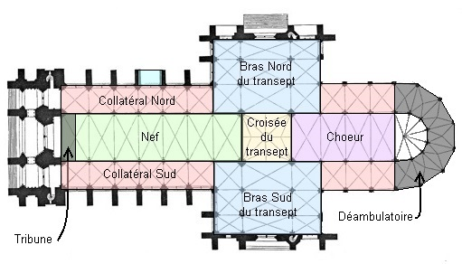

Toutes nos félicitations !
Ta reussite te permet d'accéder finalement à l'ange pleureur, le patron des enfants orphelins.
Cet ange triste symbolise le chagrin des orphelins dont la chanoine Guillan Lucas s'est occupé.
Il se situe en haut de son mausolée comme tu peux le voir sur la photo

Ce mausolée de trouve dans la partie appelée déambulatoire

Tu as résolu toutes les énigmes. Encore Bravo !
Tu peux rejouer et essayer de terminer le jeu plus vite